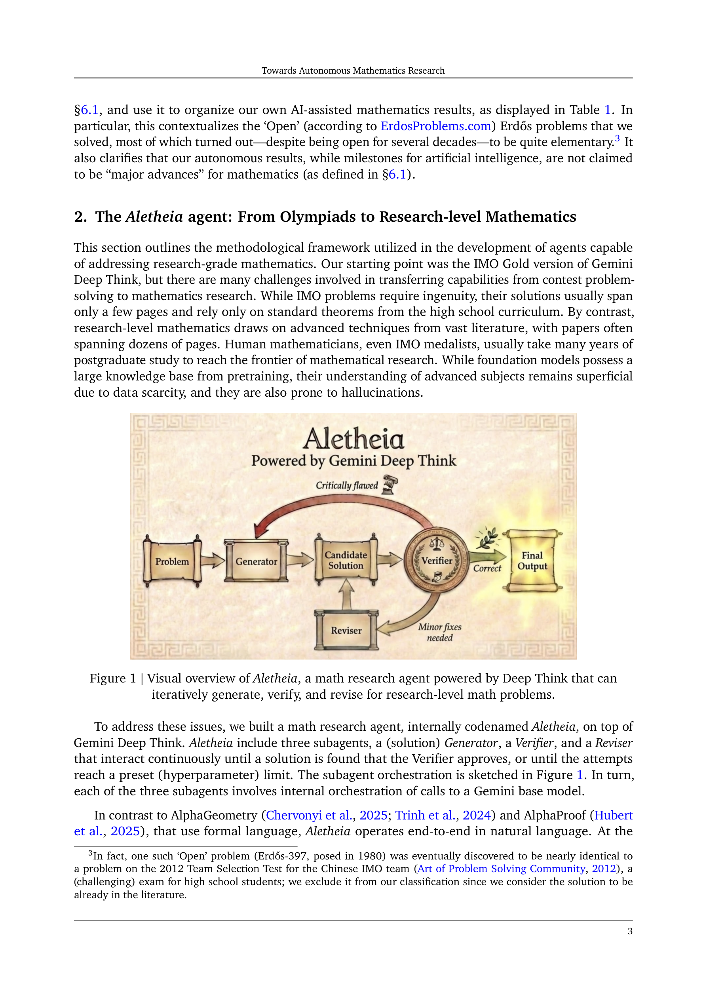
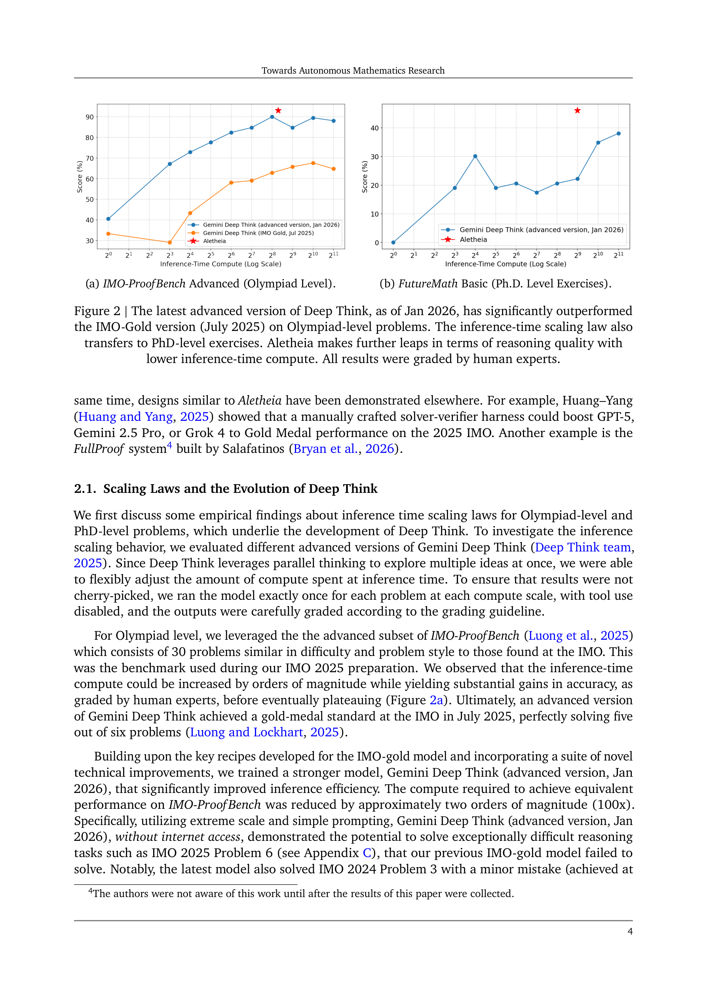
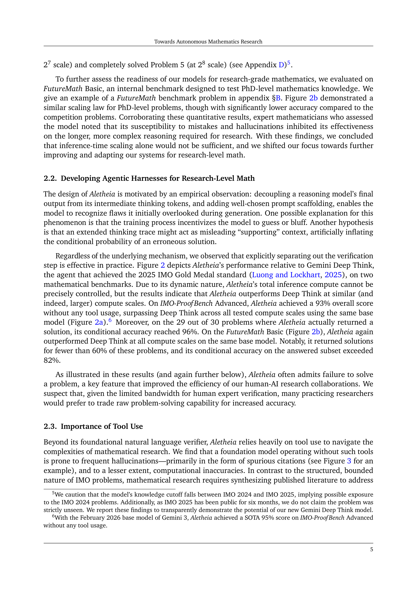
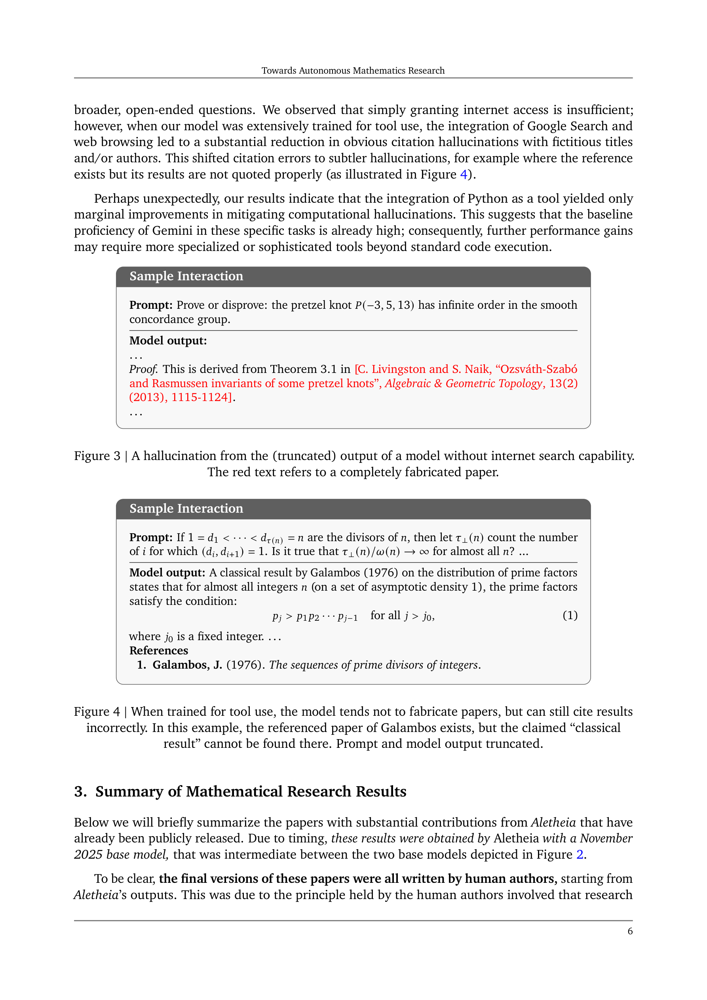
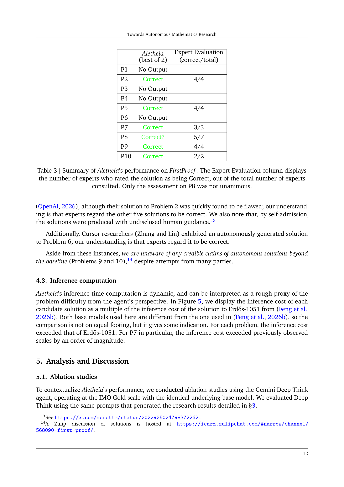

저자: Tony Feng, Trieu H. Trinh, Garrett Bingham, Dawsen Hwang, Yuri Chervonyi, Junehyuk Jung, Joonkyung Lee, Carlo Pagano, Sang-hyun Kim, Federico Pasqualotto, Sergei Gukov, Demis Hassabis, Quoc V. Le, Thang Luong 외 | 날짜: 2026-02-10 | arXiv: 2602.10177

Figure 1
Google DeepMind이 개발한 수학 연구 에이전트 Aletheia를 소개하고, 경시대회 수학에서 전문 연구 수학으로의 전환을 시도한 연구이다. Aletheia는 Gemini Deep Think 기반의 Generator-Verifier-Reviser 구조로, 자연어 기반 end-to-end 수학 추론을 수행한다. 주요 성과로 (A) 인간 개입 없이 생성된 출판 수준 논문(산술 기하학의 eigenweight 계산), (B) 인간-AI 협업 연구 논문, (C) Erdos 미해결 문제 700개 체계적 평가(4개 자율 해결), (D) FirstProof 벤치마크 선도 성적(10문제 중 6문제 해결)을 달성했다. 동시에 "Autonomous Mathematics Research Levels" 분류 체계와 "Human-AI Interaction Card"를 제안하여 AI 기여의 투명한 문서화를 촉구한다.

Figure 2

Figure 3

Figure 4

Figure 5
총평: 경시대회 수학에서 전문 연구 수학으로의 전환이라는 근본적 도전을 체계적으로 문서화한 landmark 논문이다. 인간 개입 없는 출판 수준 연구(Feng26), 700개 Erdos 문제의 체계적 평가, FirstProof 선도 성적 등 다층적 마일스톤이 인상적이다. 특히 68.5% 오류율과 hallucination 문제를 투명하게 보고하고, Autonomous Mathematics Research Levels와 HAI Card를 통해 AI 수학 연구의 책임 있는 소통 프레임워크를 제안한 점이 높이 평가된다. 현재 자율 결과가 "major advance" 수준에 도달하지 못했음을 명시적으로 인정하는 지적 정직성도 돋보인다. AI for Science의 가장 중요한 발전 중 하나로, 수학 연구에서 인간-AI 협업의 미래를 구체적으로 제시한 연구이다.